Buying it
You can buy a Nexus 4 in Saturn, but the 16GB-version costs 395 Euro there (source). In Google Play Store, it costs "only" 349 Euro (source).
Comdirect
So, I've decided to buy it from Google Play Store. But you have to have a Google Wallet account to use it. For a Google Wallet account, you need a credit card. Unlike in the USA, most people in Germany don't have a credit card. I had to get one and decided to use the free one from Comdirect.
Here is a list of letters I got... I've expected one or two.
- 08.02.2013
- I sent my information for registration to comdirect
- 15.02.2013
- Notice that I need to send a Meldebestätigung as I did identity verification with my passport and not with my identity card. The Meldebestätigung costs 8.00 Euro.
- 21.02.2013
- General information like account number
- 22.02.2013
- PIN for online login
- 28.02.2013
- Visa-Card
- 27.02.2013
- iTAN list
- 04.03.2013
- .comdirect girocard
- 05.03.2013
- re-activation of bank account
- 05.03.2013
- bank account blocked: three failed online logins
- 05.03.2013
- PIN for Girocard
{kind=link}
{kind=link}
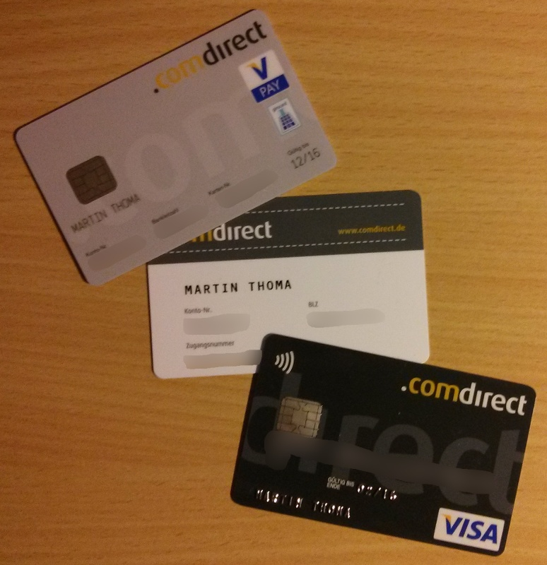
At 28.02.2013, I first transferred 5 Euro to check if everything works as expected. I have to transfer it to my girocard. It arrived at 01.03.2013. Then I have to transfer it to my Visa card. It arrived at 04.03.2013. Quite a long time for an internal transaction.
As I made three attempts to login into my online account from comdirect bank, my account was locked. I had to send a fax and ask them to unlock my account! Another Euro for the fax. (By the way, I think this is a security leak. If I wanted to do harm to the bank, I could make lots of accesses to their customers accounts and lock them. I guess it wouldn't take me more than 30 minutes to write the code and about one day to let it run. Very bad.)
Google Play
Ok, I've got a credit card. Now I will have bought a Nexus 4 in a couple of minutes, right? Wrong.
{kind=link}
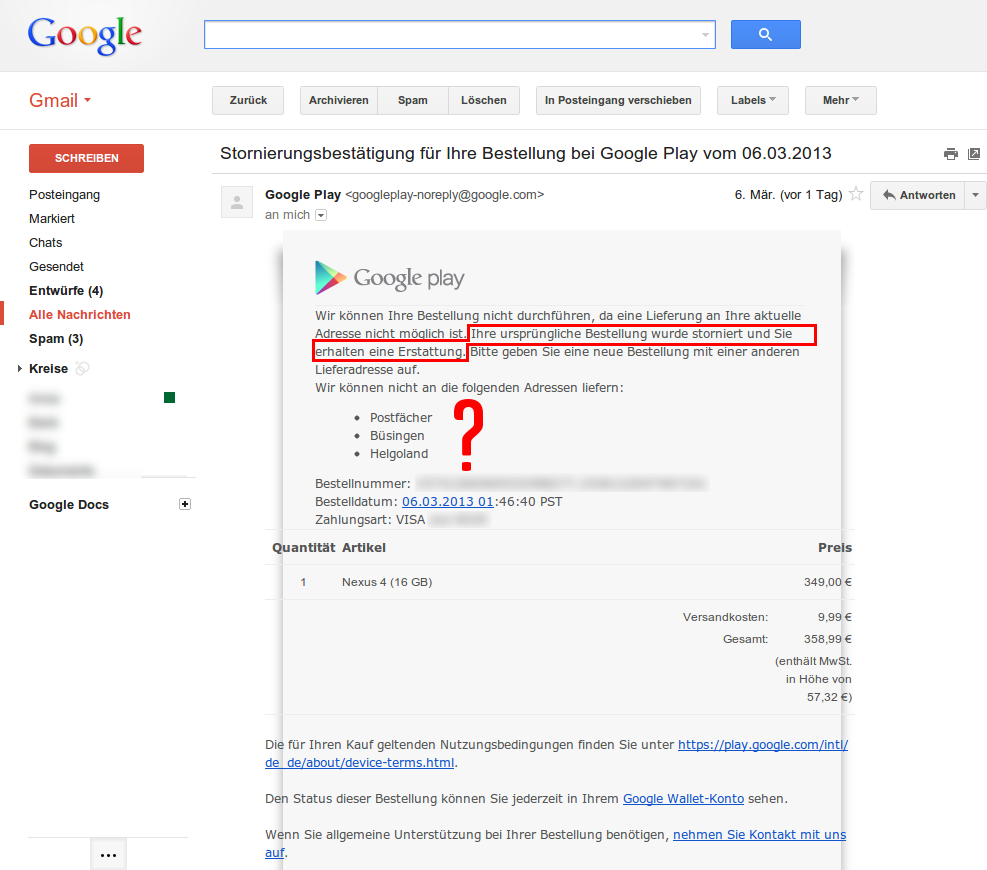
{kind=link}
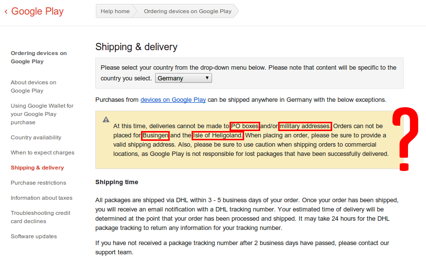
{kind=link}
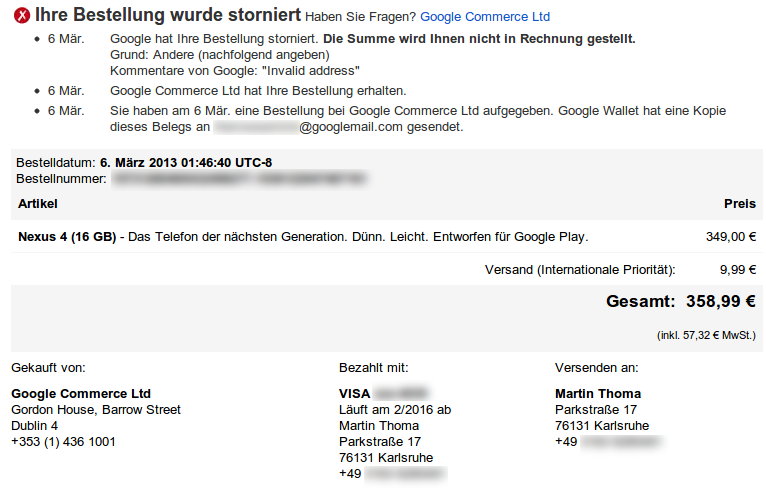
What the hell? They think I live in Helgoland or have military address?
Ok, let's try it again:
{kind=link}
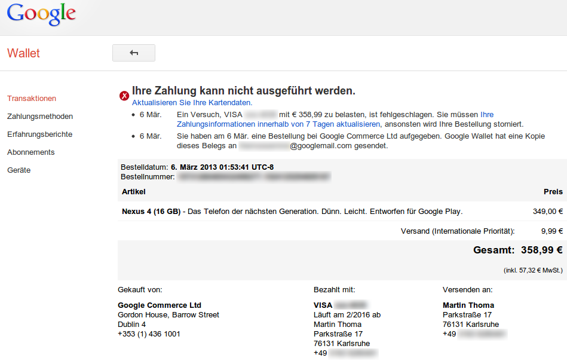
{kind=link}
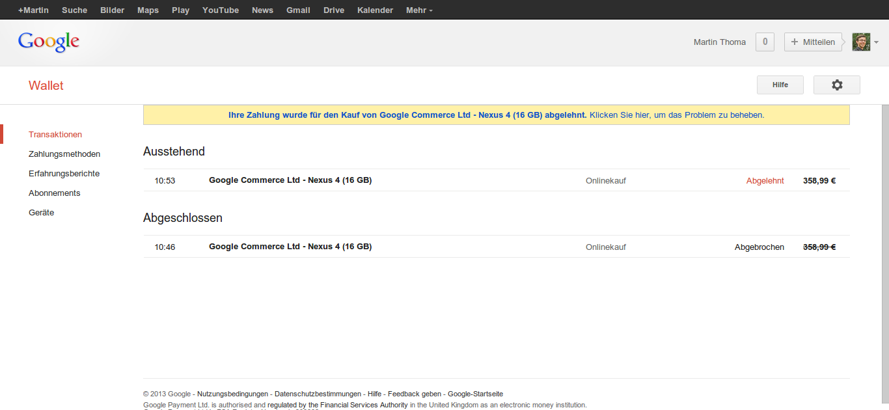
WTF? Although the transaction was canceled, my bank thinks it happened. I can't see the transaction in my bank account, though. According to my online bank account, I haven't reached my limit. But I cannot pay for the "second" phone. That sucks.
The next day it worked:
{kind=link}
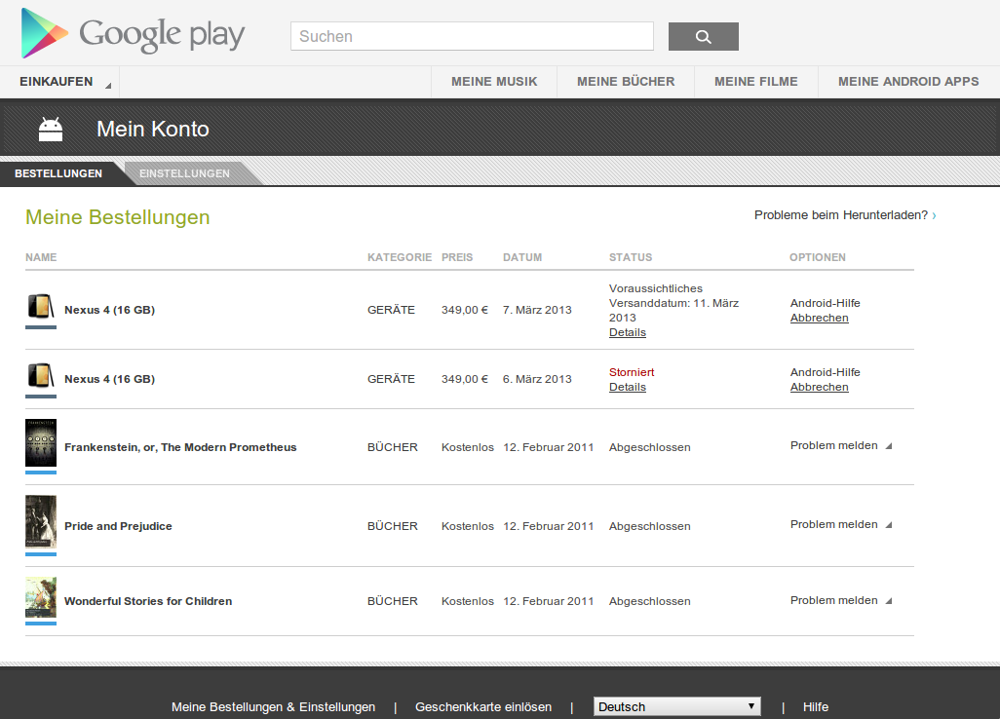
{kind=link}
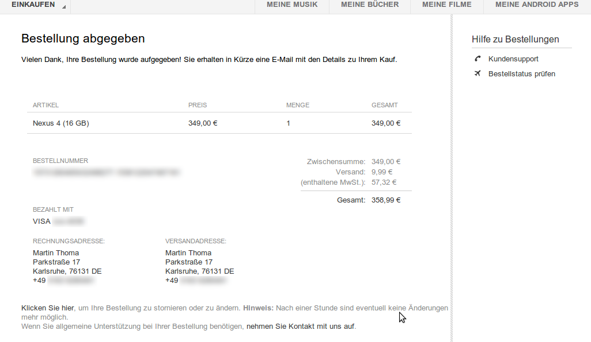
{kind=link}
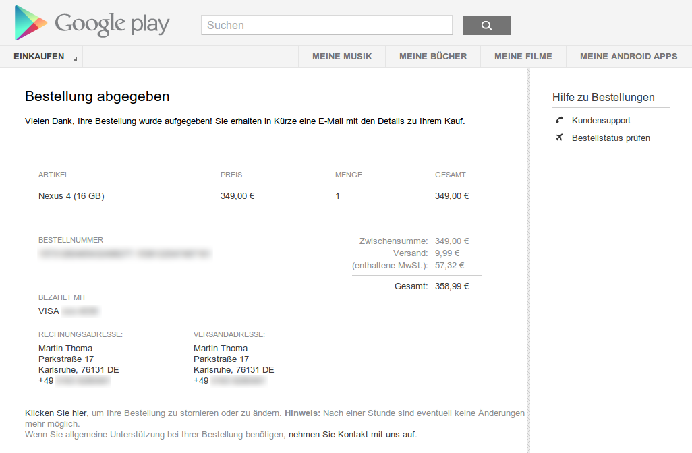
2013-03-07: Now I have to wait for the phone.
2013-03-08: Hurray, it's here!
My old not-so-smart phone and my new Nexus 4:
{kind=link}
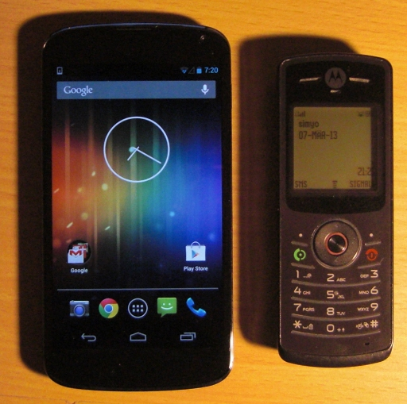
Micro-SIM vs. Mini-SIM
Did you know that different SIM cards exist? I didn't. I've learned that I have a Mini-SIM, but you need a Micro-SIM for the Nexus 4.
{kind=link}
{kind=link}
I use a pre-paid card from simyo. Currently, they offer a free exchange of Mini-SIM-cards to Micro-SIM or Nano-SIM:
{kind=link}
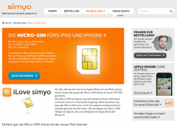
Phew! I was lucky.
{kind=link}
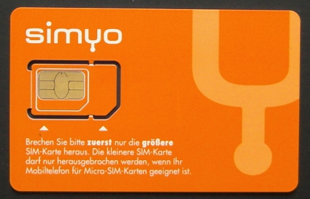
The Micro-SIM-card arrived at 2013-03-14 and will be unlocked the next day.
Beginners questions
What do those small icons on the top mean?
How can I close apps?
How do I remove widgets?
- Go to your home screen
- Leave your finger on the widget for three seconds
- Move your finger to the appearing "remove"
How do I open a shell?
How can I execute Python?
How can I take screenshots on my Nexus 4?
{kind=link}
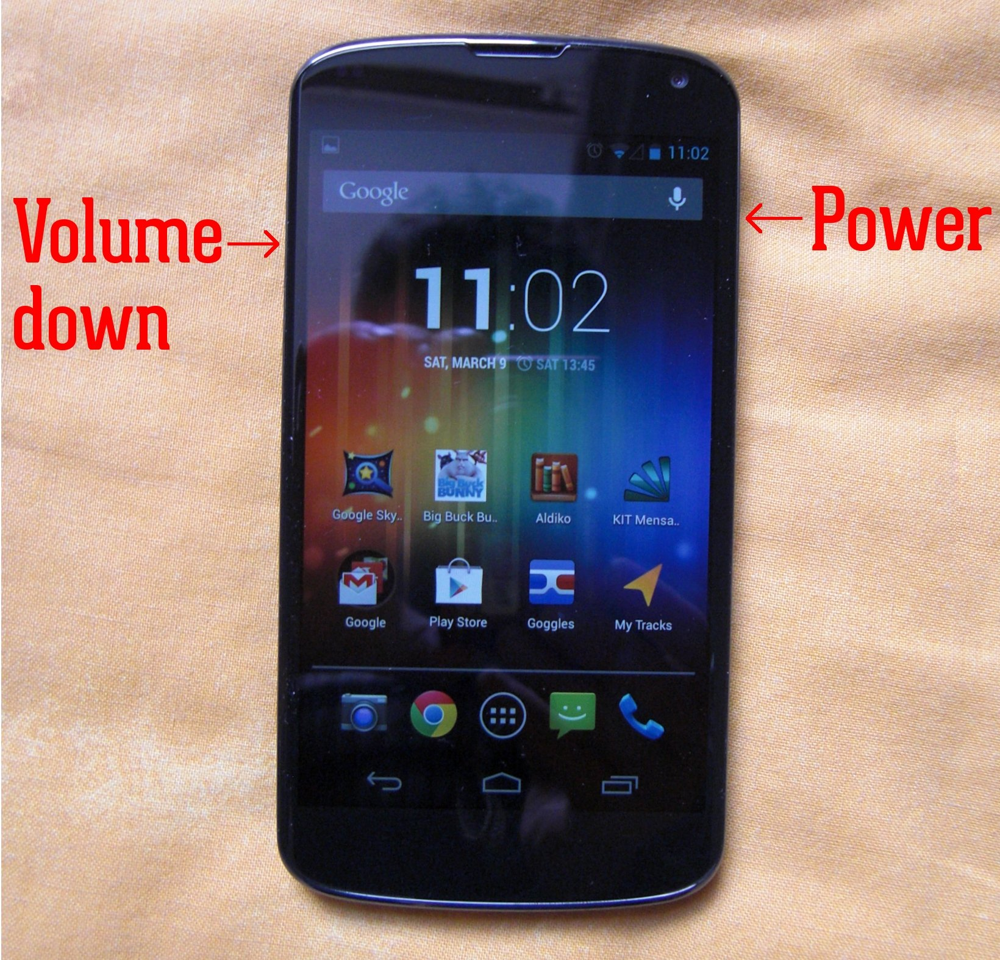
How can I enable Geolocations for my photos?
{kind=link}
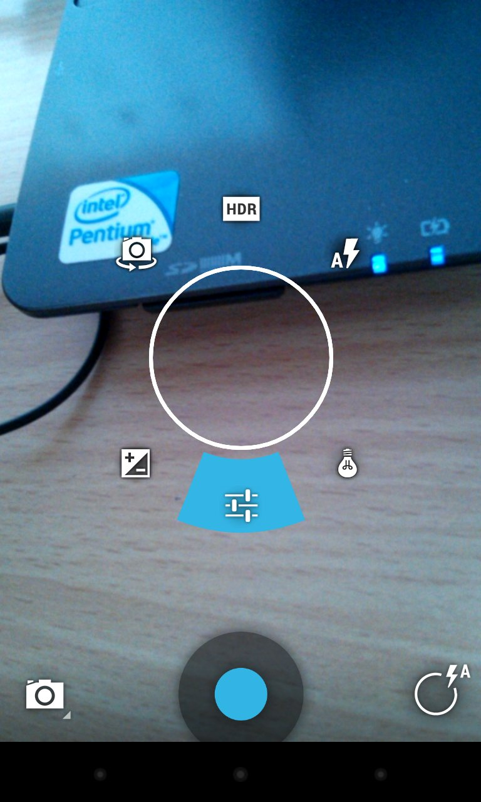
{kind=link}
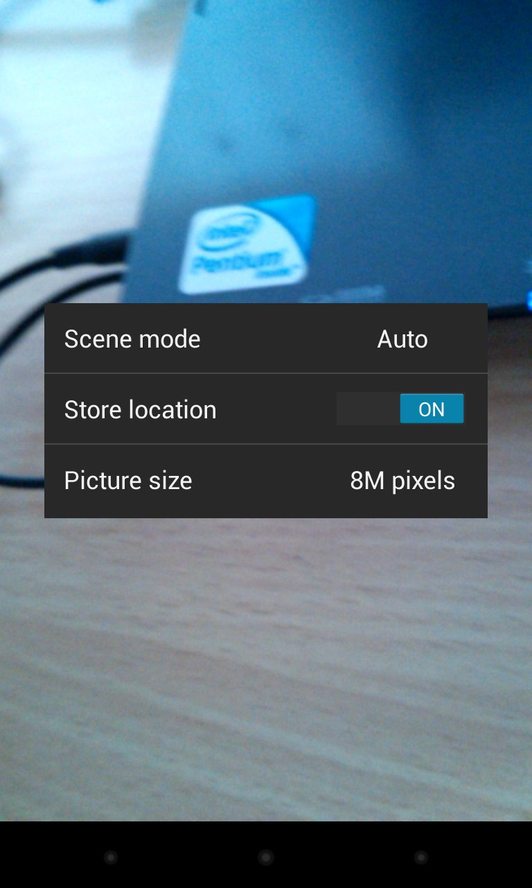
Experiments with Nexus 4
Photo-Sphere
You can create awesome photos with photo sphere. But objects have to be not very close.
Here is my first try with my room:
{kind=link}
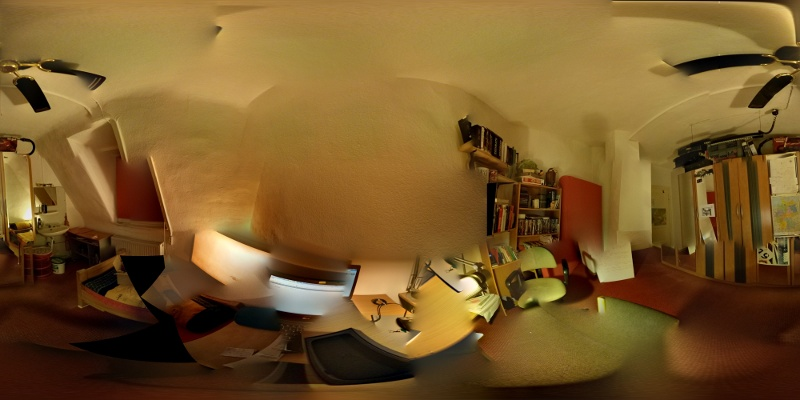
{kind=link}
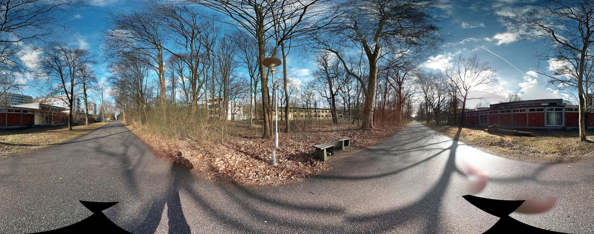
{kind=link}
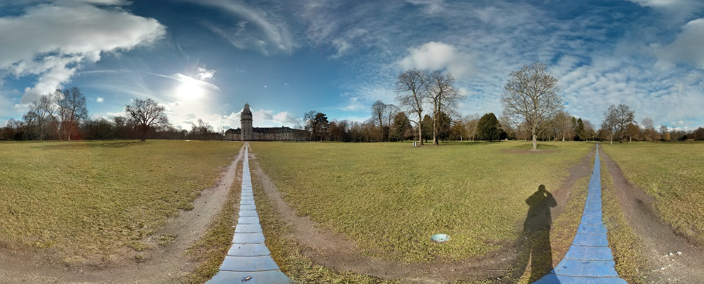
At the moment, it is not simply possible to include a sphere into a WordPress blog. Code was published to create this effect and it works, but the WordPress plugin has some issues.
By the way, you can directly create a tiny world image from a photo sphere:
{kind=link}
Adding a nicer alarm
One reason why I bought this phone was that my alarm clock (which is my old phone) is awful. zedge.net seems to be one place where you can get ring tones. I like Sintel's song, which was in Google Music.
I've installed Rings Extended, as I wasn't able to find the ringtone without it. That could be better.
Sky Map
As my phone has quite a lot of sensors (GPS, compass, altimeter) I guessed it might be possible to store the well-known stars and show them on the device when you look in their direction. The app is called "Sky Map". I have to try that when the sky is clear.
{kind=link}
Movies
I was very surprised that they don't have Blender Open Movies in the movie section of play store ☹
MyTracks
MyTracks lets you record the track you take and see some stats about that. Quite nice, but the export doesn't work.
I filed my first bug / feature request for an app: Issue 1260
What it replaces
Nexus 4 could replace quite a lot of stuff:
{kind=link}
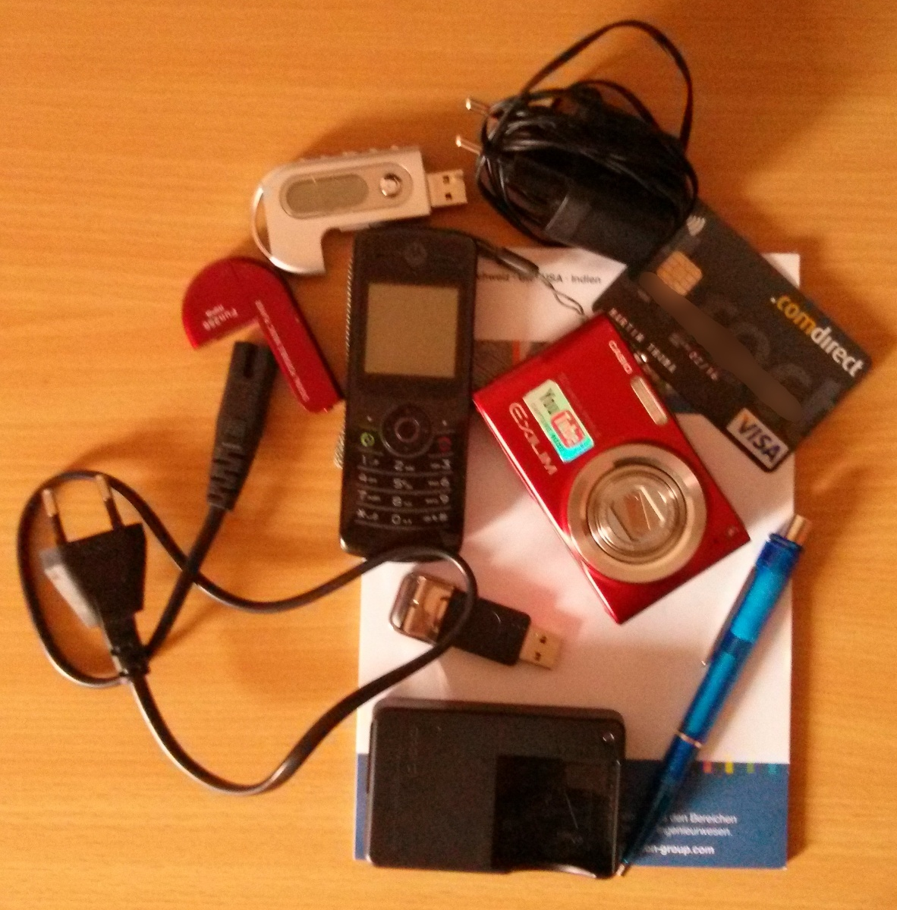
But it can't replace credit cards in Germany as NFC isn't supported by the shops by now. It can't really replace a camera as the quality is ugly. Just take a close look at the photo above. This was taken with Nexus 4. Sadly, if you don't install apps like AirDroid, it can't replace a USB stick or a MP3 player. Yes, you can use Google Music and that works, but I would like to be able to copy MP3s from my laptop computer to my smartphone. Directly. With a USB-cable and without having to use the internet. It does replace a notepad, if you only use it for writing texts and not for drawing or math. And, finally, at the moment it doesn't even replace my old phone because of the SIM-problem I've explained above. But as soon as this is fixed, the Nexus 4 will replace my Motorola W156.
Here is a comparison of those phones:
| Nexus 4 | Motorola W156 | |
|---|---|---|
| Display | 4.7 in (120 mm) diagonal IPS 1280×768 px (316 ppi) |
1.6 in (40 mm) diagonal 128×128 pixel |
| Colors | 16 777 216 | 2 |
| Memory | 16 GB | 20 kb (source) |
| Body | 133.9 x 68.7 x 9.1 mm | 114 x 43 x 14 mm |
| Weight | 139 g | 85 g |
| Stand-by time | 390 hours | 465 hours |
| Battery | 2100 mAh (Li - Polymer) | 940 mAh (Li - Ion) |
Here is the source for that comparison.
What it hopefully really replaces are maps. I've just downloaded maps for the center of Paris. That was only about 2 MB. Here is a screenshot of maps guidance in action:
{kind=link}
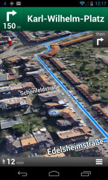
Mounting as USB-Stick
This is a major drawback of the Nexus 4. You can't simply plug it in and work with it like you do with a USB-Stick. You have to enter
mkdir Android
go-mtpfs Android
[do what you want]
sudo umount Android
Conclusion
I finally paid 358,99 Euro for the phone and shipping, 8 Euro for the "Meldebestätigung" and 1 Euro for the fax to re-activate my bank account which is 367,99 Euro in total. But if you want to experiment with a high quality smart phone, I guess it's a good choice.
What's next?
I have some ideas for apps. So my next steps are:
- Kick Windows 7 and install Arch Linux as the implementation / QA for PSE is over
- Start developing apps
- Get Started with Publishing
I guess I'll also write an article what could get improved in Android.